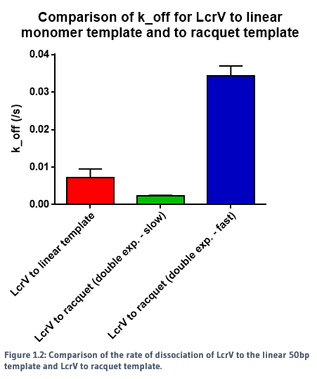
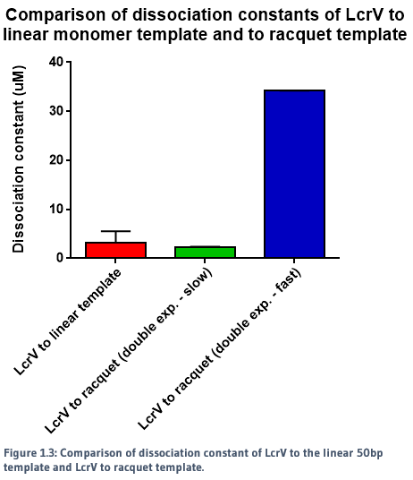
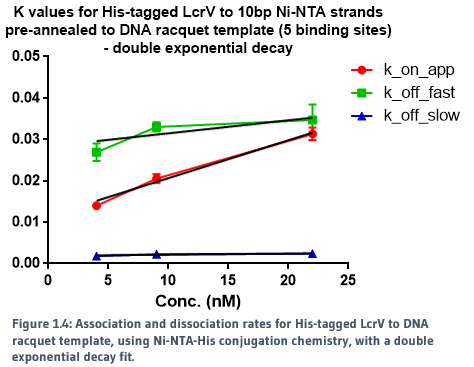
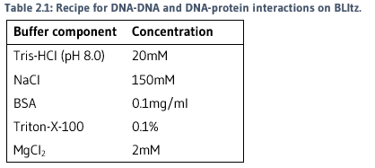

So all the components needed for making the Injectisome tip have been obtained. But how do we know we’ve actually made it?
This is where binding kinetics comes in! With the use of biolayer interferometry, we can begin to characterise protein-protein and protein-DNA interactions. We can determine what kind of binding it is (i.e. is it cooperative?), how fast it is (i.e. what are the kon and koff rates), and what the binding affinity of each component is (i.e. what's the Kd value?).
These aspects all add up to paint the beginnings of a portrait of self-assembly – one of Nature's greatest triumphs and mysteries! If we can begin to characterise even a part of this process, we can gain a much better understanding of the molecular processes that occur every day in all living things.
So what is biolayer interferometry?
It’s a label-free dip-and-read system which can measure interactions between proteins, peptides, nucleic acids, and lipids in real time. The technology is based on principle interactions between light waves [1].
The BLItz machine uses a glass fibre-based biosensor, where the surface chemistry occurs on the tip. White light is passed through the glass fibre and reflected back to the machine from two interfaces – interface between glass fibre and bio-compatible layer, and interface between surface chemistry and solution. These two reflections come from the same source, and therefore have the same wavelengths [2].
When molecules bind to the biosensor surface, the path length of the wave from the interface between surface and solution will increase while the other remains unchanged. This causes a phase shift, and a change in interference patterns of all wavelengths. Similarly, dissociation causes a shift back to the in waves initial position. These can be read by the BLItz machine for real-time monitoring of molecular binding events occurring on the biosensor surface [2].
This allows the generation of association and dissociation curves over time [3], and are therefore useful for measuring interactions between different molecules.
REFERENCES
We used a racquet DNA design containing five binding sites to act as a potential scaffold for the protein to bind to. Using NTA-to-His-tag conjugation chemistry, we were able to successfully observe binding of proteins to the DNA template. The rates of association and dissociation for binding of proteins to the racquet (5 binding site), and binding of proteins to a monomer template (1 binding site) were calculated, and are summarised in Figures 1.1, 1.2 and 1.3.

When a single exponential decay curve was fitted to the monomer template, it showed clear 1-to-1 fit. However, a single exponential decay curve did not fit to the racquet template data. A double exponential curve improved the fit, indicating that the interaction between the proteins and the racquet were no longer 1-to-1. As seen in the figures above, there were two calculated rates - a significantly faster rate compared to the monomer, and a slow rate.
The slower dissociation rate (k_off) for the racquet data is indicative of cooperativity, in which we would expect a slower rate of release from the template due to increased protein-protein interactions, created by the colocalisation of proteins by the racquet. The faster rate is ambigious, but may be indicative of direct protein-protein interactions between LcrVs, which would be expected to be signficantly weaker without the aid of a scaffold. The direct comparison of association and dissociation rates for LcrV to racquet protein can be seen in Figure 1.4.

This data also indicates that we did successfully build the T3SS tip complex with the aid of a DNA scaffold.
Within the scope of the experiment, reliable protocols for use of biolayer interferometry in DNA-DNA and DNA-protei interactions have been documented as well, with confidence in their ability to produce replicable results. The intermediate steps for calculation and characterisation of the kinetics of 10bp NTA DNA to monomer and single protein to monomer template were also carried out with success.
AIM: To determine the optimal conditions for annealing 10bp NTA DNA strands to a 50bp linear DNA template, and determine the kon, koff and dissociation constant of the reaction.
OPTIMISATION OF BLItz CONDITIONS
A series of experiments were conducted to determine that best conditions to run biolayer interferometry. The following conditions were used for all following experiments:

OPTIMISATION OF LOADING CONCENTRATION OF LINEAR TEMPLATE
The loading concentration of the template onto the streptavidin tip needed to be determined to ensure that there was no over-saturated binding, which could impact analysis.
Different concentrations of the template were prepared by serial dilutions from a stock of 500nM. The concentration of unaminated 10bp DNA strand was prepared to 125nM. Each template concentration was tested on the BLItz machine with the following settings:
Controls with template, 10bp strands and buffer were run, for subtracting any non-specific binding from the trace. The traces were then compared for selection of the best loading concentration. This was defined as the concentration which gave a clear, replicable, non-saturating curve.
TESTING OF CONCENTRATIONS OF 10BP NTA DNA STRANDS
Different concentrations of the unaminated 10bp strands were prepared from a stock of 500nM. The concentration of the template was prepared to 15nM (as determined by optimisation). Each 10bp strand concentration was tested with replicates on the BLItz with the following settings:
Controls with template, 10bp strands and buffer were run, for subtracting any non-specific binding from the trace. The data was exported for processing and analysis.
AIM: To determine the rate of dissociation (koff) of 10bp and 20bp NTA DNA strands from a 50bp linear DNA template after pre-annealing.
PREPARATION OF PRE-ANNEALED DNA SAMPLES
A series of DNA samples were prepared in PCR tubes to 30ul for pre-annealing (Table 2.2).
The samples were hybridised using PCR with the following settings:

TESTING OF PRE-ANNEALED DNA SAMPLES
Each sample was run with replicates on the BLItz with the following settings:
Controls were run for non-specific binding. The monomer template only and trimer template only runs were as baseline subtractions for analysis. The data was exported for processing and analysis.
AIM: To determine the kon, koff and dissociation constant of the nickel-histidine interaction between a single histidine-tagged LcrV tip protein and the pre-annealed 20bp Ni-NTA DNA strand to trimer template.
PREPARATION OF PRE-ANNEALED DNA TEMPLATE
A 30ul sample was prepared, with 150nM template, and 312.5nM 20bp NTA DNA. The NTA DNA strands were then hybridised to a trimer template using PCR, as written in Pre-annealed template hybridisation assays protocol.
The annealed sample was then diluted 1 in 10 to a volume of 270ul, containing 375nM NiSO4 (25-fold increase to template). This was incubated for a minimum of 30 minutes before use.
PREPARATION OF LcrV TIP PROTEIN
Samples of LcrV protein snap-freezed in 10% glycerol were thawed and buffer-exchanged using Veba Spin Desalting Columns into Tris-salt buffer (20mM Tris-HCl, 150mM NaCl).
The concentration of the proteins was determined using the Direct Detect Infrared Spectrometer, and diluted with the BLItz buffer (Table 2.1) to a concentration of 10uM. These were then serial-diluted down to a concentration of 0.625uM.
TESTING OF LcrV TO TEMPLATE BINDING
The template and LcrV protein samples were run on the BLItz with the following settings:
Controls were run for non-specific binding. A template-only run was used to subtract non-specific binding and dissociation from the test runs. The data was exported for processing and analysis.
AIM: To determine the kon, koff and dissociation constant of five LcrV tip protein to pre-annealed 10bp Ni-NTA DNA strands on racquet template.
OPTIMISATION FOR PRE-ANNEALED DNA TEMPLATE
The fold concentration of NTA DNA strands to template was determined with the use of gel retardation assays. Samples were prepared in PCR tubes. Concentrations of each component for each sample are included in Table 2.3.
Samples were hybridised using PCR, as written in Pre-annealed template hybridisation assays protocol.
Loading dye was mixed with 10ul of each sample, then loaded onto a native 10% polyacrylamide gel. Refer to Table 2.4 for loading dye recipe and Table 2.5 for gel recipe.
The gel was run at 180V for 60 minutes at 4°C. The image was then stained with Sybr-Gold for 5 minutes, then imaged on the transilluminator.
PREPARATION OF PRE-ANNEALED DNA TEMPLATE
A 30ul sample was prepared with 200nM template and 2uM NTA DNA (2-fold increase of NTA to binding sites).
The hybridisation and incubation with NiSO4 were carried out as written in Preparation of pre-annealed DNA.
PREPARATION OF LcrV TIP PROTEIN
The protein was buffer-exchanged and prepared as written in Preparation of LcrV tip protein.
The protein was prepared to a concentration of 20uM, and diluted with the BLItz buffer (Table 2.1) to a concentration of 20uM. These were then serially diluted down to a concentration 1.25uM.
TESTING OF LcrV TO TEMPLATE BINDING
The template and LcrV protein samples were run on the BLItz with the following settings:
Controls were run for non-specific binding. A template-only run was used to subtract non-specific binding and dissociation from the test runs. The data was exported for processing and analysis.